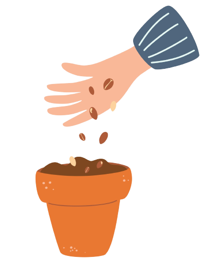
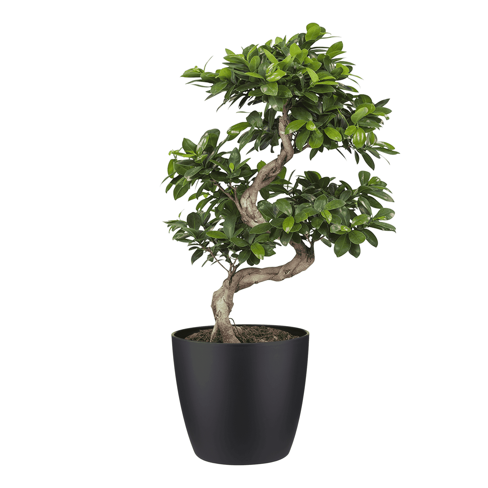
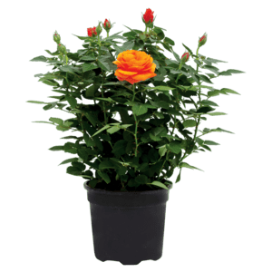
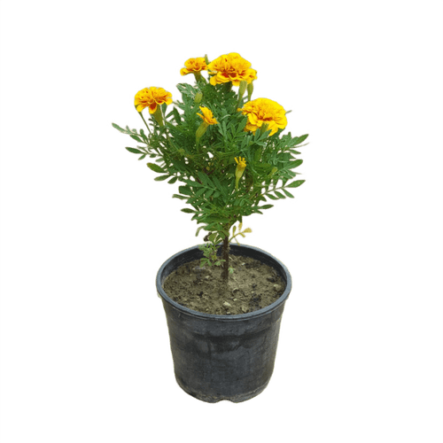
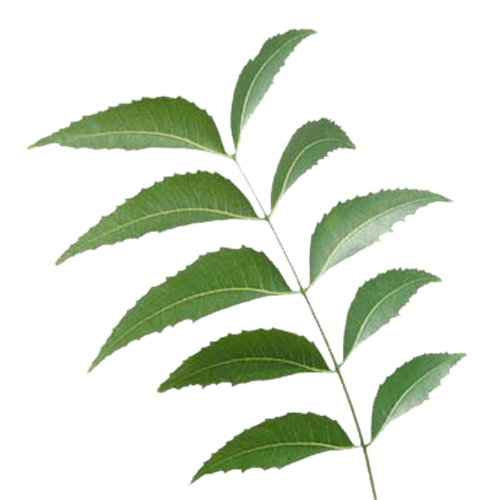

Trees are of the utmost priority for the sustenance of humankind and yet we have always been ignorant and selfish towards them. We, at Synapse believe in always giving back more to nature than it provides us with. Team Synapse is organizing Vrikshvan, A plantation drive across India to build a sustainable future for the youth. It will have participants from different age groups. The main idea behind organizing this event is to start a movement to “Make India Greener”.
Steps to grow your plant
Follow instruction for more info
Inoculate Coating the seed with bacteria that allow it to fix nitrogen soil

Sow the seeds The quantities of our additions are not an exact science

Punt the pots We own two of these blockers, one with a pin that makes
Nerium Oleander
Nerium oleander, most commonly known as oleander or nerium, is a shrub or small tree cultivated worldwide in temperate and subtropical areas as an ornamental and landscaping plant. It is the only species currently classified in the genus Nerium, belonging to subfamily Apocynoideae of the dogbane family Apocynaceae
Gulmohar
Delonix regia is a species of flowering plant in the bean family Fabaceae, subfamily Caesalpinioideae native to Madagascar. It is noted for its fern-like leaves and flamboyant display of orange-red flowers over summer.

Rose
A rose is a woody perennial flowering plant of the genus Rosa, in the family Rosaceae, or the flower it bears. There are over three hundred species and tens of thousands of cultivars. They form a group of plants that can be erect shrubs, climbing, or trailing, with stems that are often armed with sharp prickles.

Marigold
Tagetes (Marigold) is a genus of annual or perennial, mostly herbaceous plants in the sunflower family Asteraceae. They are among several groups of plants known in English as marigolds. The genus Tagetes was described by Carl Linnaeus in 1753.
Canna Lily (Keli)
Nerium oleander, is a shrub or small tree cultivated worldCanna or canna lily is the only genus of flowering plants in the family Cannaceae, consisting of 10 species. Cannas are not true lilies, but have been assigned by the APG II system of 2003 to the order Zingiberales in the monocot clade Commelinids, together with their closest relatives, the gingers, spiral gingers, bananas, arrowroots, heliconias, and birds of paradise.
Cedar Tree
Cedrus, common English name cedar, is a genus of coniferous trees in the plant family Pinaceae. They are native to the mountains of the western Himalayas and the Mediterranean region, occurring at altitudes of 1,500–3,200 m in the Himalayas and 1,000–2,200 m in the Mediterranean.
Kesudo (Palash)
Butea monosperma is a species of Butea native to tropical and sub-tropical parts of the Indian Subcontinent and Southeast Asia, ranging across Pakistan, India, Bangladesh, Nepal, Sri Lanka, Myanmar, Thailand, Laos, Cambodia, Vietnam, Malaysia, and western Indonesia.

Neem
Azadirachta indica, commonly known as neem, nimtree or Indian lilac, and in Nigeria called dogoyaro or dogonyaro, is a tree in the mahogany family Meliaceae. It is one of two species in the genus Azadirachta, and is native to the Indian subcontinent and most of the countries in Africa.
Oak
An oak is a tree or shrub in the genus Quercus of the beech family, Fagaceae. There are approximately 500 extant species of oaks. The common name "oak" also appears in the names of species in related genera, notably Lithocarpus, as well as in those of unrelated species such as Grevillea robusta and the Casuarinaceae.